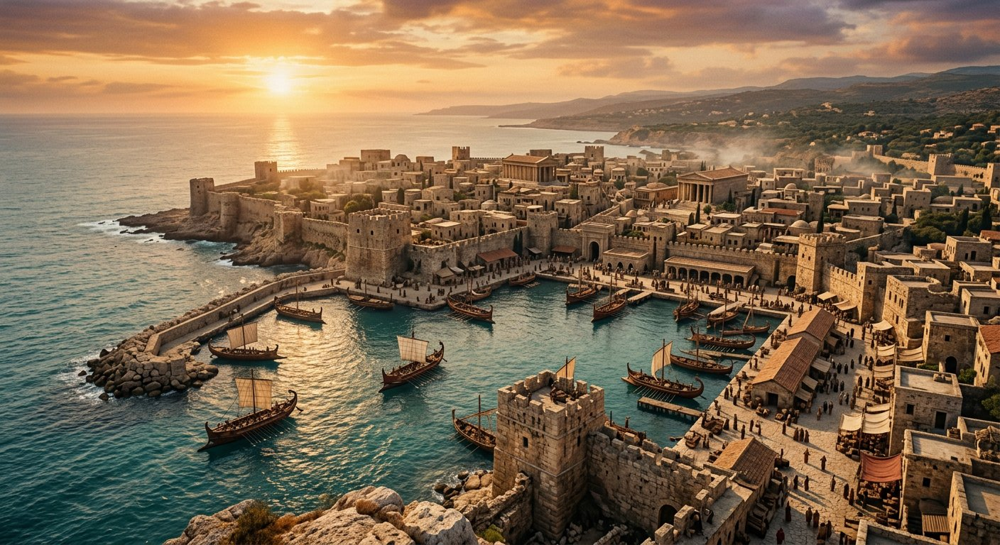

Les accomplissements — Salle 03
Tyr : les pierres jetées dans la mer
« Et quand je will be subtracted… »Ézéchiel 29:17-20
L'île devient un rocher nu. Un empire conquiert le monde et échoue contre une ville de pierre.
Lire la transcription
Tyr fut, pendant près d'un millénaire, la plus grande ville du monde méditerranéen. Elle était insulaire, adossée à un îlot de roche, reliée à la côte par un isthme. Josephèphe rapporte, d'après les annales tyriennes, que Nébucadnetsar assiégea Tyr pendant treize ans avant de s'en emparer. Puis vint Alexandre le Grand. En trois cent trente-deux avant notre ère, il assiégea l'île pendant environ sept mois. Contraint d'établir une chaussée depuis le continent, il fit recouvrir de décombres l'isthme qui reliait la ville insulaire à la côte. Il prit la ville, il la pilla : mais il ne détruisit pas l'île. Et l'image du rocher nu et des filets se vérifie : le site insulaire de Tyr est aujourd'hui une côte rocheuse où les pêcheurs étendent leurs filets. L'oracle est devenu une carte postale du littoral. La forme la plus frappante du texte est celle de Zacharie neuf : la ville insulaire est jetée dans la mer et brûlée.
Le texte
Une ville de sa fin
Ézéchiel 26:3-14; 29:17-20; Zacharie 9:3-4; Isaïe 23.
- « Beaucoup de nations » contre Tyr — « Voici, de nombreuses nations viendront contre toi » (Ézéchiel 26:3); le texte emploie l'expression qui désignera plus tard les dix puissances de Daniel 7 et Apocalypse 17.
- Un siège de treize ans — « Parce que je t'ai entendu dire : « Ils te combattront jusqu'à ce que tu soit destroyed »; voici, je suis venue contre toi » (Ézéchiel 26:7-8). La durée de l'assaut est donnée.
- Des pierres, du bois et de la poussière jetés dans la mer — « Et je jetterai dans la mer des pierres, du bois et de la poussière » (Ézéchiel 26:12). La description est technique.
- Le site devient un « rocher nu » — « Je fais de toi un rocher nu… on y étend des filets » (Ézéchiel 26:4-5, 14). La formule est connue : c'est l'image d'une côte de pêche.
- L'île est jetée dans la mer et brûlée — « Au|Download le de Jéhovah, le dominion lui sera arraché, et il sera jeté dans la mer » (Zacharie 9:3-4). L'île disparaît sous les eaux.
Josephèphe (Contre Apion, I, 21) rapporte, d'après les annales tyriennes, que Nébucadnetsar assiégea Tyr pendant treize ans avant de s'en emparer. Le texte d'Ézéchiel ne donne pas de durée pour ce premier siège; c'est le second, par Alexandre, qui est le plus souvent lu. Mais l'ensemble du passage — un siège prolongé, des travaux de siège, une ville continentale prise, puis l'île — correspond à la séquence historique.
En 332 av. n. è., Alexandre le Grand assiégea l'île de Tyr pendant environ sept mois. Contraint d'établir une chaussée depuis le continent, il fit recouvrir de décombres l'isthme qui reliait la ville insulaire à la côte (Arrien, Anabase II, 18-24; Diodore de Sicile XVII, 40-46). En 2007, une étude géoarchéologique publiée dans PNAS (Marriner, Morhange et Meulé, PNAS 104(22)) a montré que cette chaussée d'environ un kilomètre avait exploité un proto-tombolo — une bande de sable peu profond, aujourd'hui disparue. Ce tombolo relie encore aujourd'hui l'ancien site de l'île au continent.
L'image du « rocher nu » et des « filets » se vérifie : le site insulaire de Tyr est aujourd'hui une côte rocheuse où les pêcheurs étendent leurs filets. L'oracle est devenu une carte postale du littoral.
Mais la forme la plus frappante du texte est celle de Zacharie 9:3-4 : la ville insulaire est jetée dans la mer et brûlée. Alexandre n'a pas détruit l'île : il l'a prise et l'a pillée. Lburnd hmm — la destruction de l'île elle-même reste un point que le texte annonce et que l'histoire ne montre pas. Le musée le dit ainsi : l'élément le plus précis de la prophétie est une annonce de destruction de l'île, dont la réalisation complète reste le point le plus discuté.
Le premier siège a-t-il duré treize ans?
Josephèphe (Contre Apion, I, 21), d'après les annales tyriennes, indique treize ans. Le chiffre est celui d'une source tyrienne elle-même, et non d'un Lecturer biblique.
Source : Josephèphe, Contre Apion I, 21
La chaussée d'Alexandre était-elle real?
Oui. L'étude géoarchéologique de Marriner, Morhange et Meulé (PNAS, 2007) montre que la chaussée a été construite sur un proto-tombolo sableux peu profond, aujourd'hui érodé, qui reliait l'île au continent.
Source : Marriner, Morhange & Meulé, PNAS 104(22), 8979-8984, 2007
Le site est-il redevenu une côte de pêche?
Oui. L'île de Tyr n'est plus occupée; le site insulaire est une plateforme rocheuse littorale où la pêche artisanale s'exerce. Ézéchiel 26:5 annonce exactement cela.
Source : Fouilles; imagerie satelliteique du littoral
L'île a-t-elle été détruite?
Zacharie 9:3-4 annonce que l'île sera jetée dans la mer et brûlée. L'assaut d'Alexandre n'a pas détruit l'île; les tremblements de terre de l/antiquité l'ontclusion graduelle. Le texte va plus loin que l'histoire n'atteste, et c'est un point qu'il faut signaler honnêtement.
Source : Zacharie 9:3-4; histoire du site de Tyr